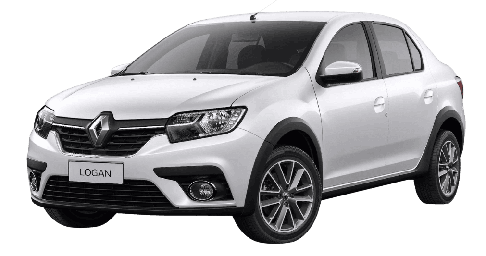
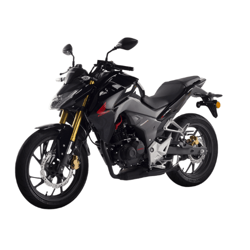
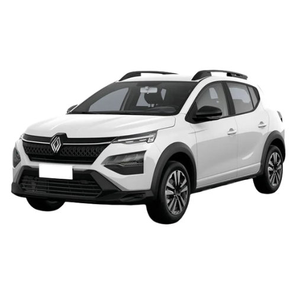
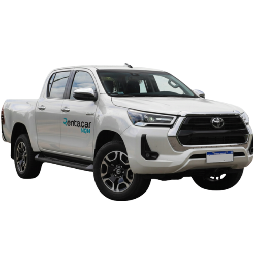

Edad Mínima
Debes tener al menos 21 años para poder rentar un vehículo.
Cada viaje es único, por eso te ofrecemos autos de calidad y un servicio pensado para que disfrutes cada momento en el camino.
Nuestra Flota
Entregas a domicilio en Neuquén
Atención personalizada y asistencia 24hs
Alquiler de Autos y Camionetas en Neuquén: Soluciones para Turismo y Empresas Petroleras.

Alquiler de motos en Neuquén. La opción más rápida para ciudad o aventura en la Patagonia.
Reservar
Vehículos ideales para turismo y viajes urbanos con entrega en el Aeropuerto de Neuquén.
Reservar
Camionetas equipadas para Vaca Muerta y minería. Seguridad y robustez para empresas petroleras.
ReservarRequisitos simples para que puedas disfrutar de nuestros autos sin complicaciones.
Debes tener al menos 21 años para poder rentar un vehículo.
Debes contar con una licencia de conducir vigente para tu seguridad.
Es necesario tener una tarjeta de crédito activa para el proceso de renta.
RENTACAR NEUQUÉN: Con más de 20 años de experiencia, en Rentacar brindamos soluciones de movilidad para tus viajes de negocios, turismo o cualquier ocasión especial. Descubre nuestra flota de vehículos y disfruta de un servicio adaptado a tus necesidades, con la seguridad y comodidad que te mereces.
"Como Proveedores de servicio de alquiler (Rent a Car) en Neuquén, garantizamos el cumplimiento de la Ley 24.240, asegurando la entrega de vehículos en óptimas condiciones de seguridad y funcionamiento, con información contractual cierta, clara y detallada (Art. 4º LDC) sobre tarifas, cobertura y uso. El Cliente/Usuario asume la responsabilidad de la custodia y uso diligente del vehículo, respetando los términos y límites de la locación y la normativa de tránsito vigente, debiendo responder por los daños, multas e incumplimientos que excedan la cobertura o resulten de un uso negligente."